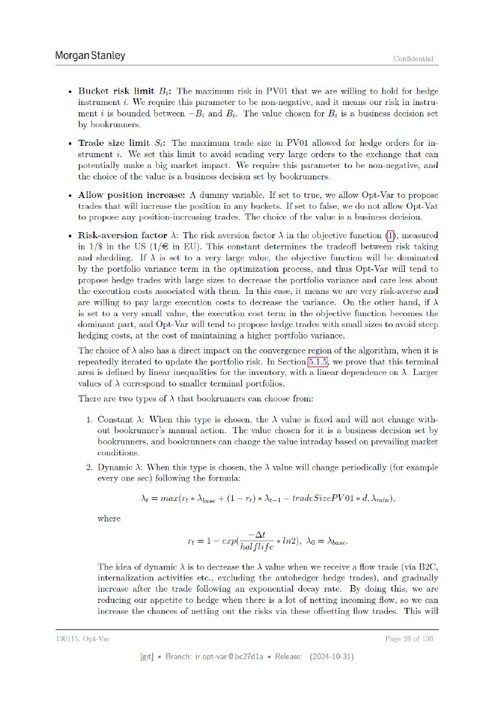

モデル説明
ページ 026
3.3 モデル入力とデータ 以降
{kind=link}

原文OCRテキスト
Morgan Stanley Confidential
+ Bucket risk limit B;: The maximum risk in PVO1 that we are willing to hold for hedge
instrument 7. We require this parameter to be non-negative, and it means our risk in instru-
ment i is bounded between —B; and B;. The value chosen for B; is a business decision set
by bookrunners.
+ Trade size limit $j: The maximum trade size in PVO1 allowed for hedge orders for in-
strument i. We set this limit to avoid sending very large orders to the exchange that can
potentially make a big market impact. We require this parameter to be non-negative, and
the choice of the value is a business decision set by bookrunners.
+ Allow position increase: A dummy variable. If set to true, we allow Opt-Var to propose
trades that will increase the position in any buckets. If set to false, we do not allow Opt-Vat
to propose any position-increasing trades. The choice of the value is a business decision.
+ Risk-aversion factor A: The risk aversion factor \ in the objective function (I), measured
in 1/8 in the US (1/€ in EU). This constant determines the tradeoff between risk taking
and shedding. If ) is set to a very large value, the objective function will be dominated
by the portfolio variance term in the optimization process, and thus Opt-Var will tend to
propose hedge trades with large sizes to decrease the portfolio variance and care less about
the execution costs associated with them. In this case, it means we are very risk-averse and
are willing to pay large execution costs to decrease the variance. On the other hand, if
is set to a very small value, the execution cost term in the objective function becomes the
dominant part, and Opt-Var will tend to propose hedge trades with small sizes to avoid steep
hedging costs, at the cost of maintaining a higher portfolio variance.
The choice of A also has a direct impact on the convergence region of the algorithm, when it is
repeatedly iterated to update the portfolio risk. In Section we prove that this terminal
area is defined by linear inequalities for the inventory, with a linear dependence on A. Larger
values of \ correspond to smaller terminal portfolios.
There are two types of X that bookrumners can choose from:
1. Constant A: When this type is chosen, the \ value is fixed and will not change with-
out bookrunner’s manual action. The value chosen for it is a business decision set by
bookrunners, and bookrunners can change the value intraday based on prevailing market
conditions.
2. Dynamic A: When this type is chosen, the A value will change periodically (for example
every one sec) following the formula:
Nr = masr(re * Mase + (1 = re) * M1 — tradeSizePVO1 * d, Amin),
where
—At
n=l erage *In2), Ao = Abase-
The idea of dynamic A is to decrease the \ value when we receive a flow trade (via B2C,
internalization activities etc., excluding the autohedger hedge trades), and gradually
increase after the trade following an exponential decay rate. By doing this, we are
reducing our appetite to hedge when there is a lot of netting incoming flow, so we can
increase the chances of netting out the risks via these offsetting flow trades. This will
130115: Opt-Var Page 26 of 136
[git] « Branch: iropt-var@be27d1a = Release: (2024-10-31)